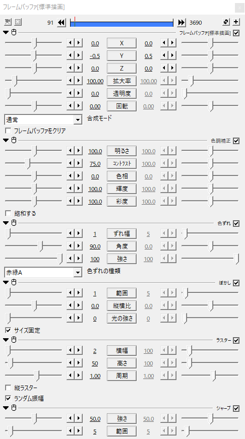

.png)

自分流のVHS風のexoファイルを配布してるお
現在は240p用、480p用、720p用、1080p用があるお
※結構重いです
編集するときはエフェクトのどれかを非表示にするか画質を下げて編集することをおすすめします。
※このエフェクトを使うにはアニメーション効果の
"YMM4"の"背景塗りつぶし"が必要です。=YMM4が必要(多分)
なくても使えなくはないけど一部のエフェクトが使えなくなる
使い方(雑)
1.ダウンロードしたexoファイルをaviutlのタイムラインにぶち込む
2.VHS風にしたい素材とかをぶち込む
3.でけた
調整とか解説とか
長さの調節
exoファイルには1分しかエフェクトが入ってないけど、1分より長かったり短かったりしたら長さを調節してね
ノイズ
そのまんま。強さの値を小さくするとノイズが濃くなるよ。

ノイズがある時とない時の違い


上から2番目のフレームバッファ
主にVHSの基礎(?)の部分
基本部分
y座標をランダム移動させて振動させてる
色調補正
そのまんま。ちょっとコントラストを下げてある。
色ずれ
そのまんま。
ぼかし
そのまんま。
ラスター
そのまんま。状態が悪い感じにしたかったら横幅増やすとそれっぽくなる。
シャープ
そのまんま。
上から3番目のフレームバッファ
画面の下の方にある少し映像がずれてるやつ
基本部分
x座標を少しずらしてる
クリッピング
画面の下にだけ表示するようにしてる
振動
そのまんま。
領域拡張
左の黒い謎の空間を作るためのやつ
アニメーション効果(背景塗りつぶし)
左の黒い謎の空間を作るためのやつ。こいつがないと下の方にある少し映像がずれてるやつはうまくいかなくなる。
境界ぼかし
何のためにつけたか忘れた()
ラスター
映像を斜めにするためのやつ


上から4番目のフレームバッファ
VHS特有の縁が浮かび上がって見えるやつ(語彙力)
基本部分
透明度を下げてることによって浮かびすぎないようにしてる
エッジ抽出
白色のエッジ抽出を使うことによって再現している。しきい値を下げてるのは浮かびすぎてたから。

上から5番目のフレームバッファ
VHS特有の字幕とかの右側に見える残像みたいなやつ(語彙力)
基本部分
x座標を少しずらしてることによって方向ブラーが左側にも出ないようにしてる。透明度を下げてることによって浮かびすぎないようにしてる。
方向ブラー
方向ブラーを使うことによって再現している。範囲上げると残像(?)が見えにくくなるけど左側にも残像が出てきやがる(x座標を変えることで対処はできる)。

その他
利用について
ご自由に使ってどうぞ。商用利用とかも可。クレジットとかもなくてもおｋ
VHSの下の方に出てくる白いノイズはネックOPNさんの動画を参考に...動画が消えている...だと...！？